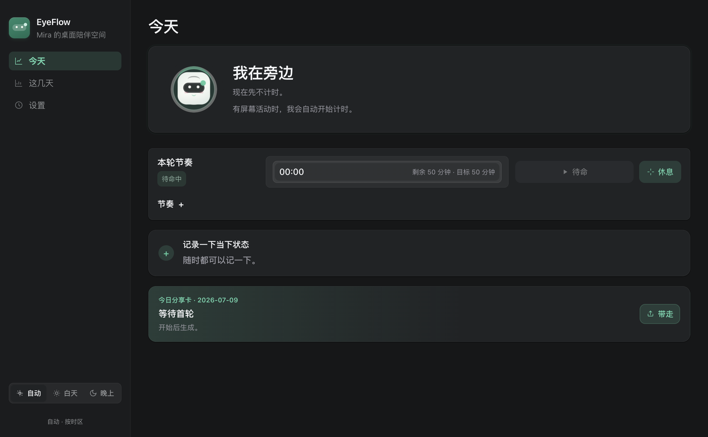
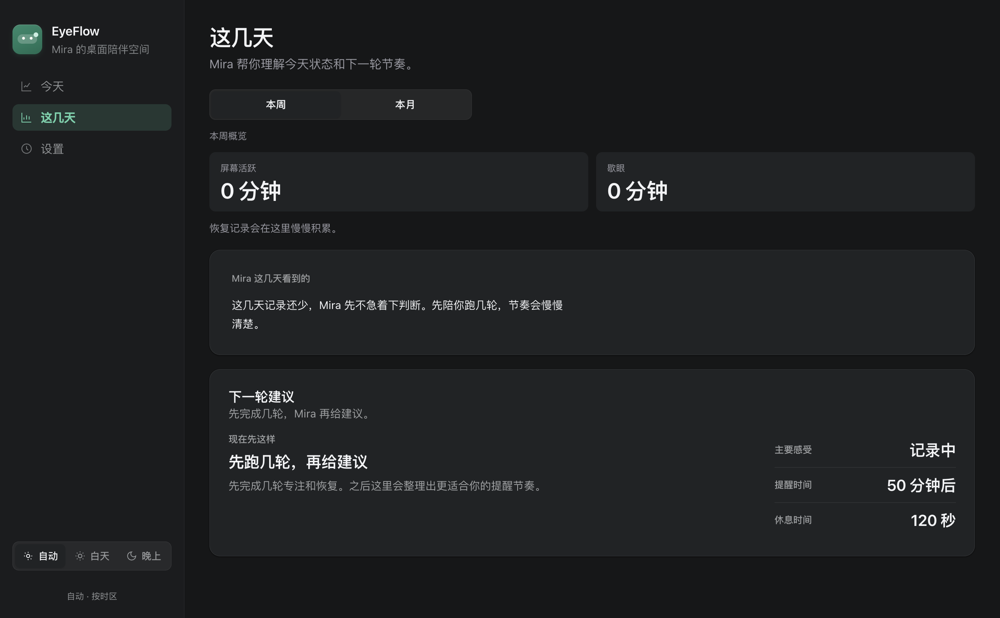

先说说眼睛
一天十几个小时，它几乎没歇过。
你认识世界，大半从这里进来。
磨损只进不退，不会自己长回来。
用得最多，偏偏最难修复。所以更该好好护着——每天，分一点点就够。
认识一下
EyeFlow 里住着 Mira，一位安静的屏幕工作伙伴。屏幕看久了，人会慢慢没状态。她做的事很小：在疲劳攒起来之前，轻轻停你一下。
她只看一件事：你盯了多久。不开摄像头、不读屏幕内容、不上传。
01 · 安静待着
她不催你开始。有屏幕活动时，才轻轻开始计时。在那之前，她就安静待着。

02 · 盯久了，说一句
桌面一角冒个头，或顶部一座小岛。你要是继续，她才慢慢把话说清楚一点。从不提高音量。
顶部提醒岛
贴在屏幕顶端，看完自己收起。
桌面一角
需要时冒个头，说完退回去。
03 · 带你看看远处
远眺、慢眨眼、慢呼吸。一步步带，不用盯着屏幕。回来时，她只说一句：欢迎回来。
不用盯着屏幕，看远处 20 秒再回来。
紧急退出04 · 如实记下
记录还少时，她会说「先不急着下判断」。宁可留白，也不编一个好看的数字。

05 · 带走
今天的专注、歇下来的时间，一句她看到的观察。本地生成，不上传。
她的规矩
除非你主动选择，不强制停下。
不读屏幕内容，不记键盘，不开摄像头。
没有分数，没有红色警告。
状态、感受、习惯，默认只在这台 Mac。
现在就试一次
10 秒就好——看向窗外，或屋里最远的那面墙。
看向远处，我在。
EyeFlow 每天做的就是这一下——安静地，一整天。